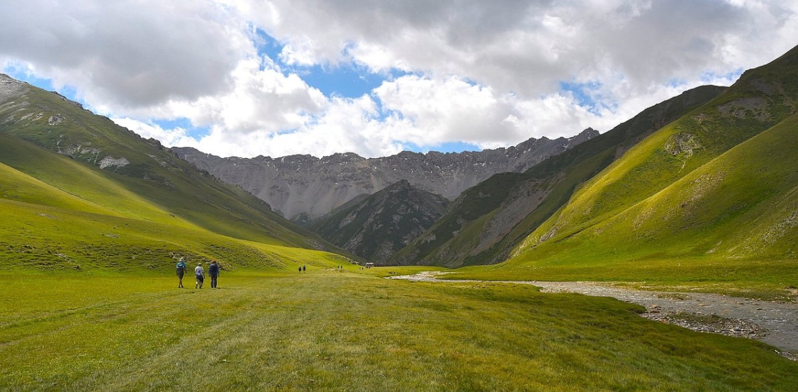
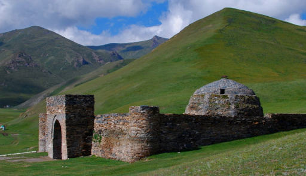

Tash - Rabat
Caravanserai "Tash-Rabat" is a unique architectural monument of the early Middle Ages, the appearance of which more specifically dates back to the 15th century, and one of the main archaeological sites of Kyrgyzstan, which has become a symbol of Tenir-Too mountain architecture. It is located in the picturesque gorge-canyon Kara-Koyun (Naryn region), 110 km south of the city of Naryn, near the border with China, at an altitude of 3200 meters above sea level.